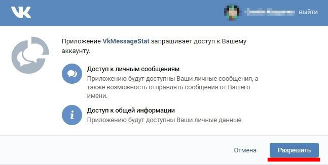
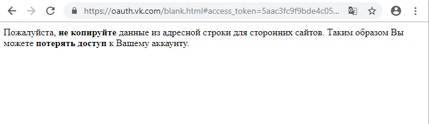
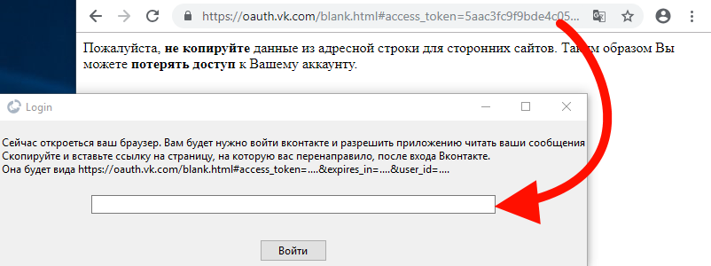

Что бы составить статистику по вашим диалогам вам необходимо дать доступ для программы к вашим диалогам
Для начала нажмите кнопку "Войти". В новой вкладке откроется страница где вы можете дать этот доступ. Переходите к шагу 2
Если вы не вошли вконтакте, то войдите введя свои данные. После чего появится окно для выдачи разрешения.
Нажмите разрешить. Вас перенаправит на другую страницу. Переходите к шагу 3
Вас перенаприт на почти пустую страницу показанную ниже
Вы должны скопировать адрес этой странице и вставить в поле для ввода в программе.
Но там же написано никуда не копировать данные из адресной строки?
Да все так. В адресной строке находится специальный ключ, который позволяет делать все то, что вы разрешили ранее. В данном случае читать ваши сообщения. Ваш ключ будет храниться на диске в файле access_token. Ключ никуда не отправляется. Так как исходный код программы открыт, вы можете это проверить. Подробнее *гитхаб ссылка*